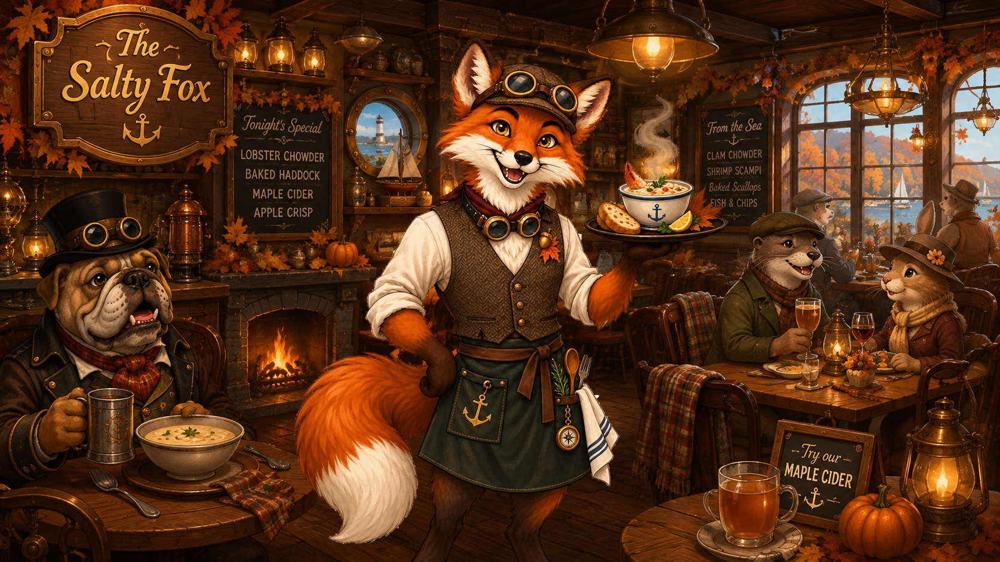

About The Salty Fox
The Salty Fox has welcomed travelers to the New England coast since 1773. What began as a small harbor tavern has grown into a gathering place for sailors, merchants, airship crews, and travelers from across the region.
In a world powered by steam and invention, the restaurant still holds on to its old coastal traditions. Humans, bulldogs, foxes, and other travelers gather around warm fires for seafood, hearty meals, and conversation after a long journey.
Over the years, the original tavern has been updated with steam-powered kitchen equipment and modern conveniences while keeping the character of the original building.

Who We Serve
The Salty Fox welcomes everyone passing through the harbor. Local families dine beside sailors preparing for sea voyages, while airship crews stop in before departing for their next destination.
Whether you arrive by road, ship, or airship, there is always a seat waiting by the fire.
Lost at sea? Find your way back.